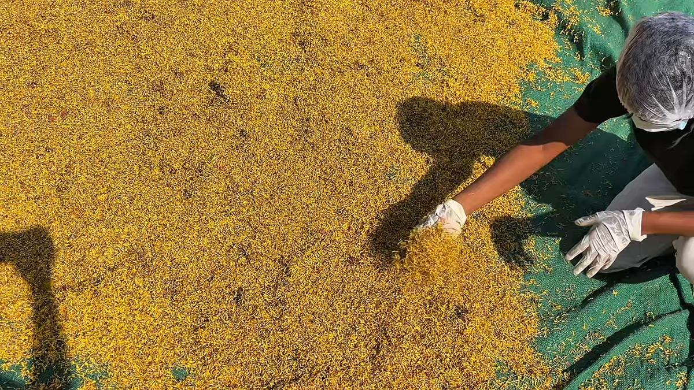

Hyderabad's flower waste, in four numbers

Flowers are a small part of a city's waste, but they are one of the easiest parts to put back to use. Four numbers show how much there is in Hyderabad.
1,16,100 tonnes
That is the amount of easily degradable green waste reported in Hyderabad in December 2024. Flowers are part of this stream.
0.84 tonnes a day
Floral waste recorded from just 20 sampled flower shops. The city has many more.
Up to 225 kg per event
Floral waste recorded at sampled function halls. One wedding can fill several sacks.
45 to 60 kg a day
What a single temple can produce during major festivals.
Sources: Soundarya et al. (2021); GHMC-reported data, 2024.
Why this matters
Temples, markets, events and parks produce flowers every day. When they go to dumps and lakes they rot. When they are collected separately they can be dried and made into incense, dhoop and natural colours, and the work of doing that creates jobs.
That is the idea behind Pakka Organics. You can read how we do it on the Story and Impact page.
More from the blog